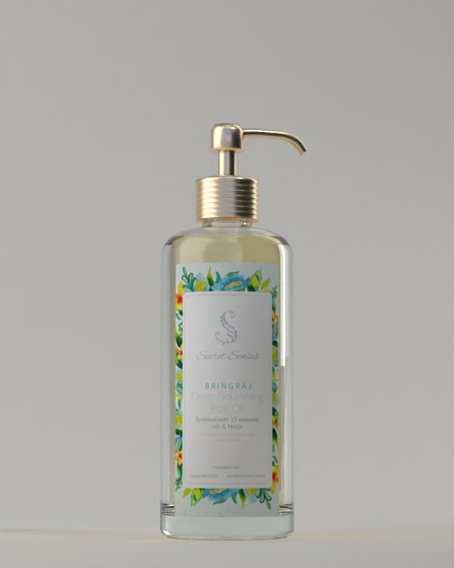
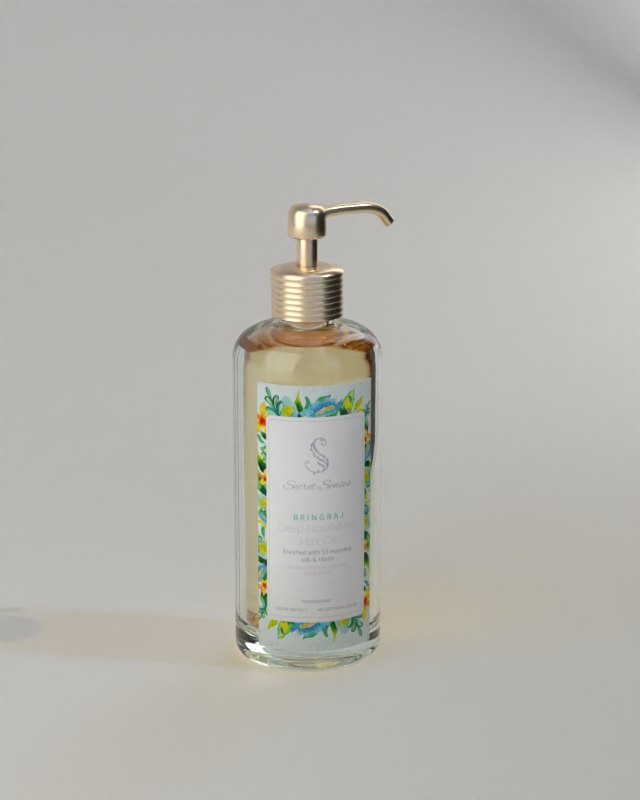
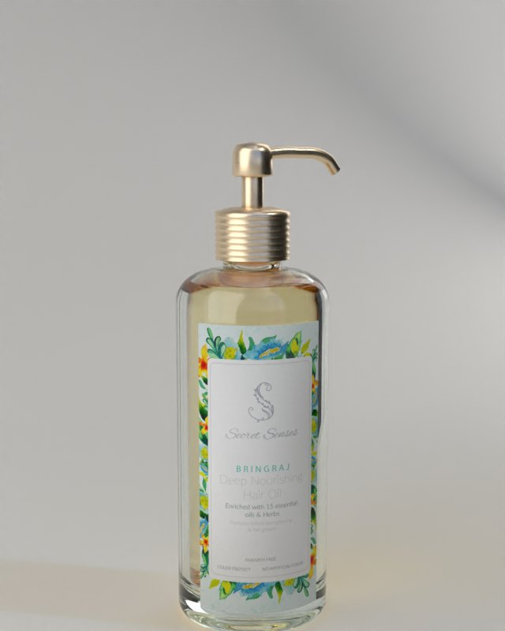
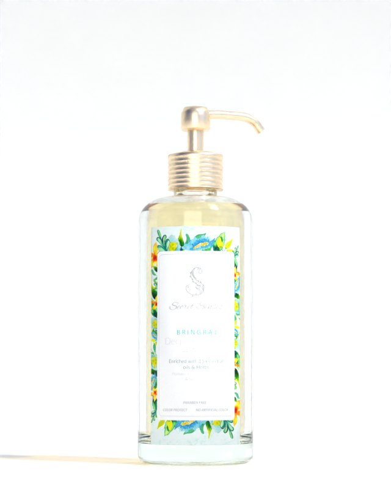
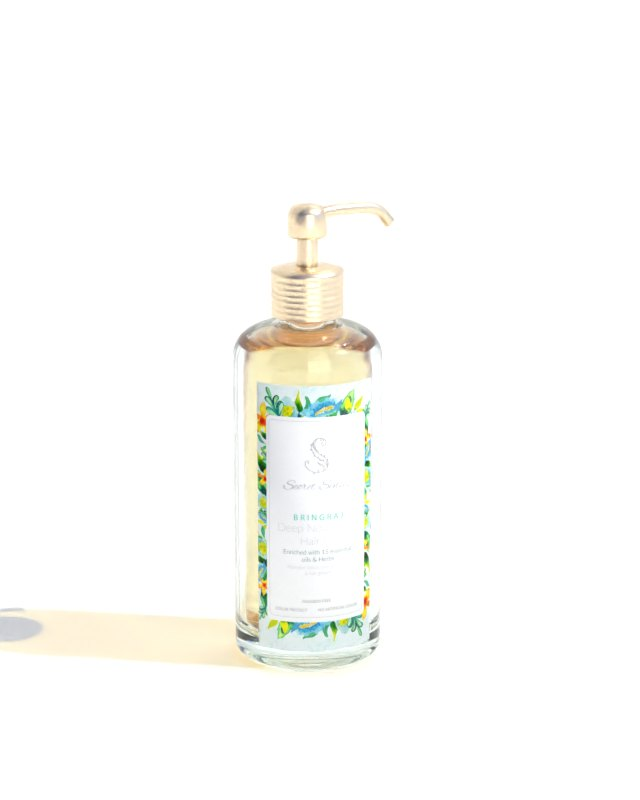
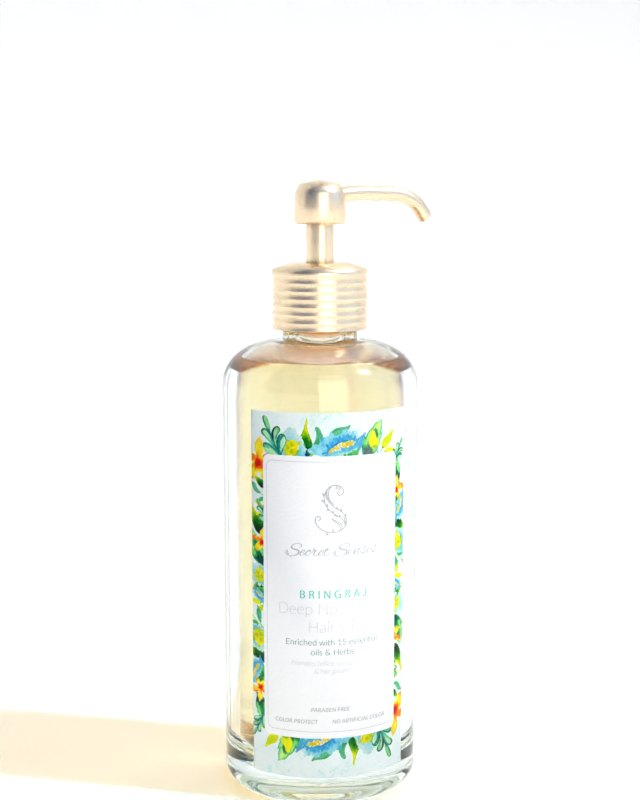
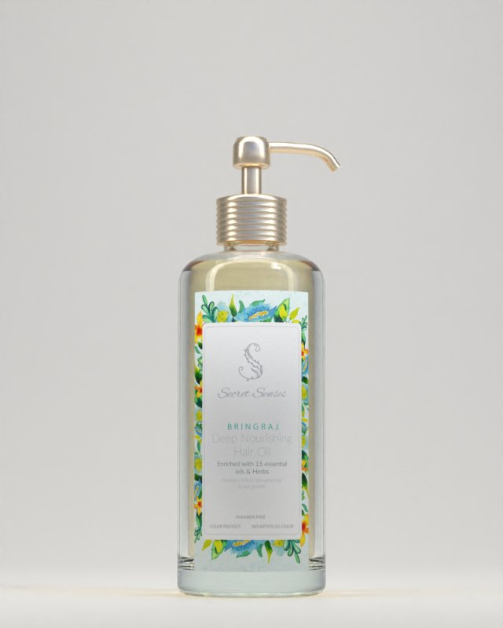
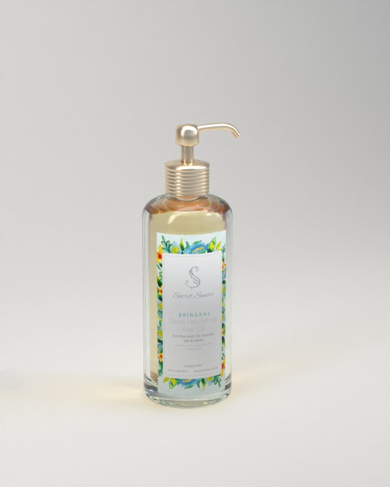
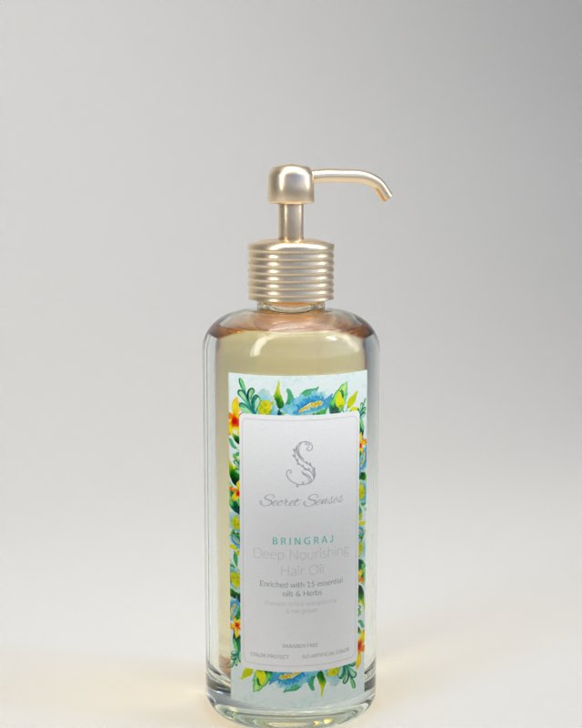

Study 80 · 4 November 2026
Secret Senses, light and camera
One source doing the work, and a camera that shows the bottle is round.
Close, three-quarter


Every light from every camera

















